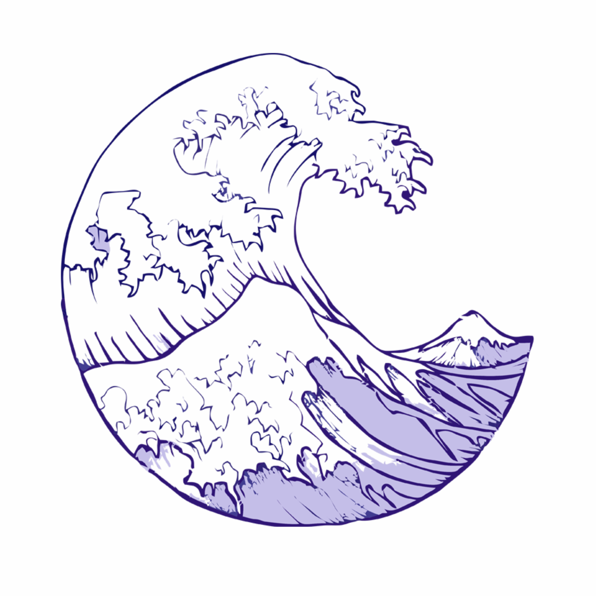

OCEAN AND IT CREATURES
Seen from outer space, our earth looks like an awesome blue marble. It is because oceans cover more than 70% of the earth's surface. As in the land, ocean contains an astonishing variety of living things that we may never know before. Oceans are deep as well as wide. On average an ocean is a little over two miles deep. But about 200 miles southwest of Guam in the Pacific Ocean, the water in the Mariana Trench is almost seven miles deep. That’s the deepest part of the ocean.
Scientists estimate that about one million species of animals live in the ocean. But most of them—95 percent—are invertebrates, animals that don’t have a backbone, such as jellyfish and shrimp.